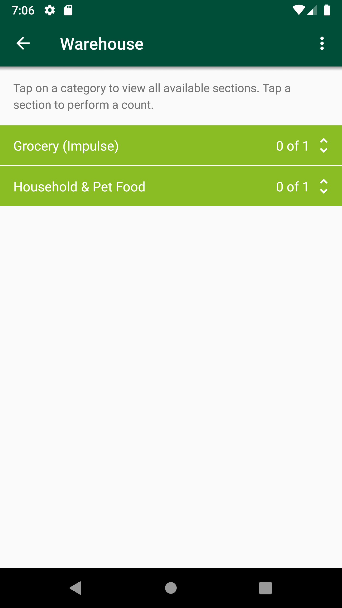
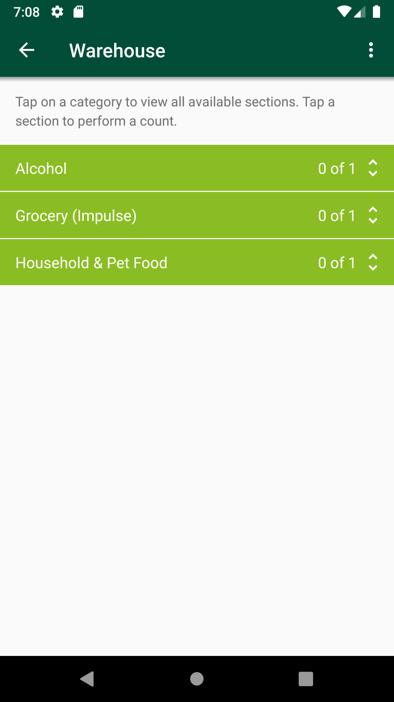
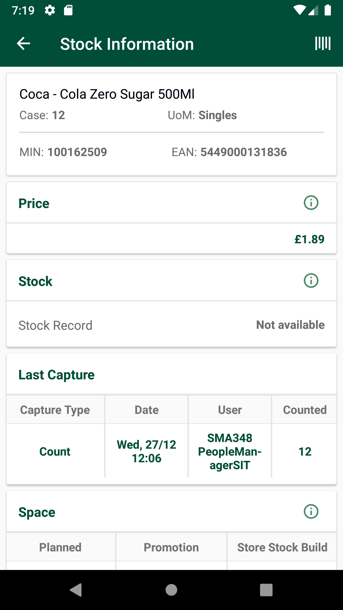
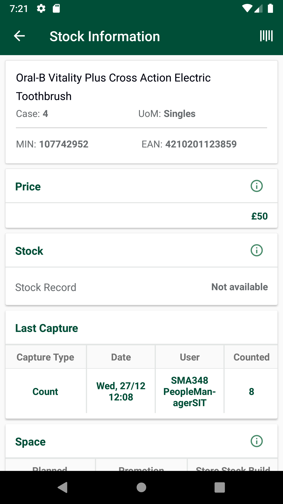
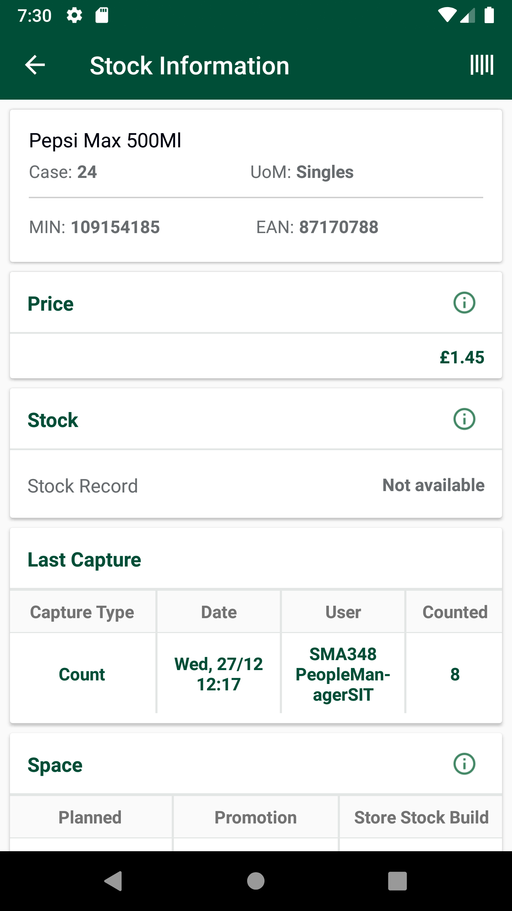
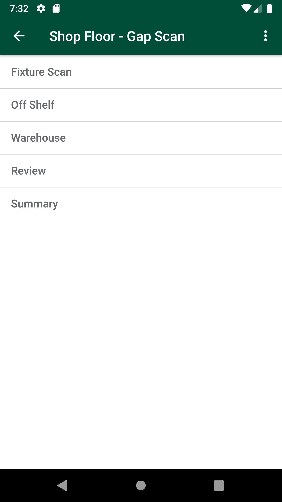
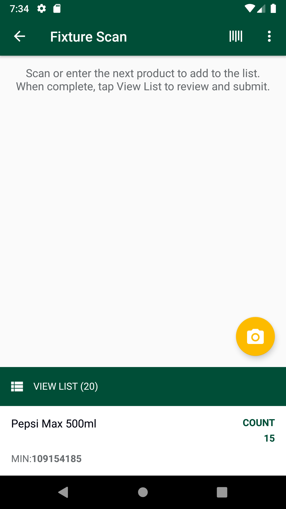

-
Verify AM GLH Functionality
11:46:50 AM / 00:46:56:241 Fail
Verify AM GLH Functionality
12.27.2023 11:46:50 AM 12.27.2023 12:33:47 PM 00:46:56:241 · #test-id=1@store_walk @regression @NewAm_glh1_701PassTO CHANGE THE DEVICE TIMINGS AS REQUIREDPassTO CHANGE THE DEVICE TIMINGS AS REQUIREDGiven I send the time "07" and mins "00" and meridiem "am" and current date in listThen I Change timeThen I Change datePassTO CHANGE THE DEVICE TIMINGS AS REQUIREDGiven I send the time "03" and mins "00" and meridiem "pm" and current date in listThen I Change timeThen I Change datePassCreate SOH for itemsPassCreate SOH for itemsGiven I create SOH for the Items based on Response code "" " " " " " " FailTC-01_Verify UI of Gaps, Count is displayed as expected or notWhen I enter Username and Password for SMA Collegue userAnd I click on login button for SMAThen I click on 'stockMngmtText' on page 'HomePagePO_New'Then I click on "Shop Floor - Gap Scan"Then I click on Fixture ScanAnd I click on Back ButtonThen I click on OffShelfAnd I click on Back ButtonThen I click on Petrolcom.morrisons.common.action.Hook.afterScenario(io.cucumber.java.Scenario)And I click on Back ButtonStep skippedThen I click on WareHouseStep skippedAnd I click on Back ButtonStep skippedThen I click on ReviewStep skippedAnd I click on Back ButtonStep skippedThen I click on SummaryStep skippedAnd I click on Back ButtonStep skippedPassDelete GLH Storewalk from ServicePassDelete GLH Storewalk from ServiceGiven request is made to capture access token and post endpoint for user v2 for "grant_type=getFromResponse"Then I Verify the Response Code for the following "- " is 200
And I get the field value for the field "access_token"And Get the generated Access Tocken for SMA app Login ServiceGiven Get request is made to Get storewalks service for current dateAnd Get Operation perform on service requestThen Verify Get storewalks service response for current dateThen Delete request is made to Delete GLH storewalk for store id "8"FailTC_02_16131_Scan product as Gap in fixture scan and verify records are present in warehouse. Delete product from fixture and verify records are not present in warehouse.FailTC_02_16131_Scan product as Gap in fixture scan and verify records are present in warehouse. Delete product from fixture and verify records are not present in warehouse.When I enter Username and Password for SMA Collegue userAnd I click on login button for SMAThen I click on 'stockMngmtText' on page 'HomePagePO_New'Then I click on "Shop Floor - Gap Scan"Then I click on Fixture ScanAnd I click on barcode entry ButtonThen Enter "107514491" numberAnd I click on GAP buttonAnd I choose the plan from popup if multiple records presentThen I verify the if it is GAPAnd I click on Back ButtonThen I click on WareHouseThen I verify my min is present in the "Household & Pet Food"And I click on Back ButtonGiven request is made to capture access token and post endpoint for user v2 for "" Then I Verify the Response Code for the following "- " is 200
And I get the field value for the field "access_token"And Get the generated Access Tocken for SMA app Login ServiceGiven Get request is made to Get storewalks service for current dateAnd Get Operation perform on service requestThen I verify Product id "107514491" for Store id "8" and Walk type "GapsHighsLows" is present in Get storewalk servicecom.morrisons.common.action.Hook.afterScenario(io.cucumber.java.Scenario)Then I verify Section status is "Available" in Get storewalk serviceStep skippedThen I click on Fixture ScanStep skippedThen I click on ViewList of GapsLowHighStep skippedAnd I Delete products from fixtureStep skippedAnd I click on Back Button till we get to the "Warehouse" pageStep skippedThen I click on WareHouseStep skippedThen I verify that record is deleted from WareHouseStep skippedFailTC_03_16131_Scan product as Count in fixture scan and verify records are present in warehouse. Delete product from fixture and verify records are not present in warehouse.FailTC_03_16131_Scan product as Count in fixture scan and verify records are present in warehouse. Delete product from fixture and verify records are not present in warehouse.When I enter Username and Password for SMA Collegue userAnd I click on login button for SMAThen I click on 'stockMngmtText' on page 'HomePagePO_New'Then I click on "Shop Floor - Gap Scan"Then I click on Fixture ScanAnd I click on barcode entry ButtonThen Enter "100162509" numberAnd I click on dynamic "sLocatorName" "COUNT" on page 'GapsLowsHighsPO'And I enter quantity "2" for fixture and warehouseAnd I choose the plan from popup if multiple records presentAnd I click on Back ButtonThen I click on WareHouseThen I verify my min is present in the "Grocery (Impulse)"And Get the generated Access Tocken for SMA app Login ServiceGiven Get request is made to Get storewalks service for current dateAnd Get Operation perform on service requestThen I verify Product id "100162509" for Store id "8" and Walk type "GapsHighsLows" is present in Get storewalk servicecom.morrisons.common.action.Hook.afterScenario(io.cucumber.java.Scenario)
Then I verify Capture details in storewalk for Product id "100162509" is Capture type "Count" Capture status "Incomplete" and Capture quantity "2"Step skippedThen I verify Section status is "Available" in Get storewalk serviceStep skippedAnd I click on Back ButtonStep skippedThen I click on Fixture ScanStep skippedThen I click on ViewList of GapsLowHighStep skippedAnd I Delete products from fixtureStep skippedAnd I click on Back ButtonStep skippedAnd I click on Back ButtonStep skippedAnd I click on Back ButtonStep skippedThen I click on WareHouseStep skippedThen I verify that record is deleted from WareHouseStep skippedFailTC_04_16131_Scan product as Count in fixture scan and verify records are present in warehouse. Delete product from fixture and verify records are not present in warehouse.FailTC_04_16131_Scan product as Count in fixture scan and verify records are present in warehouse. Delete product from fixture and verify records are not present in warehouse.When I enter Username and Password for SMA Collegue userAnd I click on login button for SMAThen I click on 'stockMngmtText' on page 'HomePagePO_New'Then I click on "Shop Floor - Gap Scan"Then I click on Fixture ScanAnd I click on barcode entry ButtonThen Enter "101533092" numberAnd I click on COUNT buttonAnd I Enter the Low quantity "2"And I choose the plan from popup if multiple records presentAnd I click on Back ButtonThen I click on WareHouseThen I verify my min is present in the "Alcohol"And Get the generated Access Tocken for SMA app Login ServiceGiven Get request is made to Get storewalks service for current dateAnd Get Operation perform on service requestThen I verify Product id "101533092" for Store id "8" and Walk type "GapsHighsLows" is present in Get storewalk servicecom.morrisons.common.action.Hook.afterScenario(io.cucumber.java.Scenario)
Then I verify Capture details in storewalk for Product id "101533092" is Capture type "Count" Capture status "Incomplete" and Capture quantity "2"Step skippedThen I verify Section status is "Available" in Get storewalk serviceStep skippedAnd I click on Back ButtonStep skippedThen I click on Fixture ScanStep skippedThen I click on ViewList of GapsLowHighStep skippedAnd I Delete products from fixtureStep skippedAnd I click on Back Button till we get to the "Warehouse" pageStep skippedThen I click on WareHouseStep skippedThen I verify that record is deleted from WareHouseStep skippedPassTC_06_16133_Verify if product is marked as COUNT, then in view list two entries should be present.PassTC_06_16133_Verify if product is marked as COUNT, then in view list two entries should be present.When I enter Username and Password for SMA Collegue userAnd I click on login button for SMAGiven Get request is made to Get storewalks service for current dateAnd Get Operation perform on service requestThen Verify Get storewalks service response for current dateThen Delete request is made to Delete GLH storewalk for store id "8"Then I click on 'stockMngmtText' on page 'HomePagePO_New'Then I click on "Shop Floor - Gap Scan"Then I click on Fixture ScanAnd I click on barcode entry ButtonThen Enter "107514491" numberAnd I click on COUNT buttonAnd I enter quantity "2" for fixture and warehouseAnd I choose the plan from popup if multiple records presentAnd I will capture the product name from view listThen I verify the product MIN value "107514491" from view listAnd I click on ViewList to verify that two entries are present for MIN "107514491"And I Delete products from fixturePassTC_07_Verify that GAP is properly generated in Fixture Scan and view list GAP status, Product name and Product min value should displayed.To verify Last capture section displaying correct information when the last capture has been taken in AM GLH and scanned as GAP.PassTC_07_Verify that GAP is properly generated in Fixture Scan and view list GAP status, Product name and Product min value should displayed.To verify Last capture section displaying correct information when the last capture has been taken in AM GLH and scanned as GAP.When I enter Username and Password for SMA Collegue userAnd I click on login button for SMAGiven Get request is made to Get storewalks service for current dateAnd Get Operation perform on service requestThen Verify Get storewalks service response for current dateThen Delete request is made to Delete GLH storewalk for store id "8"Then I click on 'stockMngmtText' on page 'HomePagePO_New'Then I click on "Shop Floor - Gap Scan"Then I click on Fixture ScanAnd I click on barcode entry ButtonThen Enter "110440154" numberAnd I click on GAP buttonAnd I choose the plan from popup if multiple records presentAnd I will capture the product name from view listThen I verify the product MIN value "110440154" from view listThen I verify the if it is GAPAnd I click on Back ButtonThen I click on WareHouseThen I verify my min is present in the "Grocery (Impulse)"And I click on Back ButtonThen I click on hotKeyAnd I select StockInformation from the Hotkey MenuAnd I click on barcode entry ButtonThen Enter "110440154" numberAnd I verify Last Capture Type is "AM Gap"And I verify Date and User details for Last captureAnd I verify Counted column and counted quantity "0" for last capture are presentAnd I click on Back ButtonAnd I click on Back ButtonFailTC_08_Verify that COUNT is properly generated in Fixture Scan and view list LOW status, Product name and Product min value should displayed.To verify Last capture section displaying correct information when the last capture has been taken in Low and scanned as LOW.FailTC_08_Verify that COUNT is properly generated in Fixture Scan and view list LOW status, Product name and Product min value should displayed.To verify Last capture section displaying correct information when the last capture has been taken in Low and scanned as LOW.When I enter Username and Password for SMA Collegue userAnd I click on login button for SMAThen I click on 'stockMngmtText' on page 'HomePagePO_New'Then I click on "Shop Floor - Gap Scan"Then I click on Fixture ScanAnd I click on barcode entry ButtonThen Enter "109154185" numberAnd I click on dynamic "sLocatorName" "COUNT" on page 'GapsLowsHighsPO'And I Enter the Low quantity "2"And I choose the plan from popup if multiple records presentAnd I will capture the product name from view listThen I verify the product MIN value "109154185" from view listAnd I verfify "109154185" item is presentAnd I click on Back ButtonThen I click on hotKeyAnd I select StockInformation from the Hotkey MenuAnd I click on barcode entry ButtonThen Enter "109154185" numberAnd I verify Last Capture Type is "Count"And I verify Date and User details for Last captureAnd I verify Counted column and counted quantity "2" for last capture are presentcom.morrisons.common.action.Hook.afterScenario(io.cucumber.java.Scenario)And I click on Back ButtonStep skippedAnd I click on Back ButtonStep skippedFailTC_08_Verify that COUNT is properly generated in Fixture Scan and view list LOW status, Product name and Product min value should displayed.To verify Last capture section displaying correct information when the last capture has been taken in Low and scanned as LOW.When I enter Username and Password for SMA Collegue userAnd I click on login button for SMAThen I click on 'stockMngmtText' on page 'HomePagePO_New'Then I click on "Shop Floor - Gap Scan"Then I click on Fixture ScanAnd I click on barcode entry ButtonThen Enter "100162509" numberAnd I click on dynamic "sLocatorName" "COUNT" on page 'GapsLowsHighsPO'And I Enter the Low quantity "4"And I choose the plan from popup if multiple records presentAnd I will capture the product name from view listThen I verify the product MIN value "100162509" from view listAnd I verfify "100162509" item is presentAnd I click on Back ButtonThen I click on hotKeyAnd I select StockInformation from the Hotkey MenuAnd I click on barcode entry ButtonThen Enter "100162509" numberAnd I verify Last Capture Type is "Count"And I verify Date and User details for Last captureAnd I verify Counted column and counted quantity "4" for last capture are presentcom.morrisons.common.action.Hook.afterScenario(io.cucumber.java.Scenario)
And I click on Back ButtonStep skippedAnd I click on Back ButtonStep skippedFailTC_08_Verify that COUNT is properly generated in Fixture Scan and view list LOW status, Product name and Product min value should displayed.To verify Last capture section displaying correct information when the last capture has been taken in Low and scanned as LOW.When I enter Username and Password for SMA Collegue userAnd I click on login button for SMAThen I click on 'stockMngmtText' on page 'HomePagePO_New'Then I click on "Shop Floor - Gap Scan"Then I click on Fixture ScanAnd I click on barcode entry ButtonThen Enter "107742952" numberAnd I click on dynamic "sLocatorName" "COUNT" on page 'GapsLowsHighsPO'And I Enter the Low quantity "4"And I choose the plan from popup if multiple records presentAnd I will capture the product name from view listThen I verify the product MIN value "107742952" from view listAnd I verfify "107742952" item is presentAnd I click on Back ButtonThen I click on hotKeyAnd I select StockInformation from the Hotkey MenuAnd I click on barcode entry ButtonThen Enter "107742952" numberAnd I verify Last Capture Type is "Count"And I verify Date and User details for Last captureAnd I verify Counted column and counted quantity "4" for last capture are presentcom.morrisons.common.action.Hook.afterScenario(io.cucumber.java.Scenario)
And I click on Back ButtonStep skippedAnd I click on Back ButtonStep skippedFailTC_09_Verify that High is properly generated in Fixture Scan and view list HIGH status, Product name and Product min value should displayed. To verify Last capture section displaying correct information when the last capture has been taken in High and scanned as HIGH.FailTC_09_Verify that High is properly generated in Fixture Scan and view list HIGH status, Product name and Product min value should displayed. To verify Last capture section displaying correct information when the last capture has been taken in High and scanned as HIGH.Given Get request is made to Get storewalks service for current dateAnd Get Operation perform on service requestThen Verify Get storewalks service response for current dateThen Delete request is made to Delete GLH storewalk for store id "8"When I enter Username and Password for SMA Collegue userAnd I click on login button for SMAThen I click on 'stockMngmtText' on page 'HomePagePO_New'Then I click on "Shop Floor - Gap Scan"Then I click on Fixture ScanAnd I click on barcode entry ButtonThen Enter "100162509" numberAnd I click on dynamic "sLocatorName" "COUNT" on page 'GapsLowsHighsPO'And I enter quantity "2" for fixture and warehouseAnd I choose the plan from popup if multiple records presentAnd I click on OKAnd I will capture the product name from view listThen I verify the product MIN value "100162509" from view listAnd I click on Back ButtonThen I click on hotKeyAnd I select StockInformation from the Hotkey MenuAnd I click on barcode entry ButtonThen Enter "100162509" numberAnd I verify Last Capture Type is "Count"And I verify Date and User details for Last captureAnd I verify Counted column and counted quantity "4" for last capture are presentcom.morrisons.common.action.Hook.afterScenario(io.cucumber.java.Scenario)And I click on Back ButtonStep skippedAnd I click on Back ButtonStep skippedPassTC_09_Verify that High is properly generated in Fixture Scan and view list HIGH status, Product name and Product min value should displayed. To verify Last capture section displaying correct information when the last capture has been taken in High and scanned as HIGH.Given Get request is made to Get storewalks service for current dateAnd Get Operation perform on service requestThen Verify Get storewalks service response for current dateThen Delete request is made to Delete GLH storewalk for store id "8"When I enter Username and Password for SMA Collegue userAnd I click on login button for SMAThen I click on 'stockMngmtText' on page 'HomePagePO_New'Then I click on "Shop Floor - Gap Scan"Then I click on Fixture ScanAnd I click on barcode entry ButtonThen Enter "110440154" numberAnd I click on dynamic "sLocatorName" "COUNT" on page 'GapsLowsHighsPO'And I enter quantity "4" for fixture and warehouseAnd I choose the plan from popup if multiple records presentAnd I click on OKAnd I will capture the product name from view listThen I verify the product MIN value "110440154" from view listAnd I click on Back ButtonThen I click on hotKeyAnd I select StockInformation from the Hotkey MenuAnd I click on barcode entry ButtonThen Enter "110440154" numberAnd I verify Last Capture Type is "Count"And I verify Date and User details for Last captureAnd I verify Counted column and counted quantity "8" for last capture are presentAnd I click on Back ButtonAnd I click on Back ButtonFailFirst scan in GLH as LOW then as HIGH/GAP , captured should override with latest Capture details in Stock information screenFailFirst scan in GLH as LOW then as HIGH/GAP , captured should override with latest Capture details in Stock information screenWhen I enter Username and Password for SMA Collegue userAnd I click on login button for SMAThen I click on 'stockMngmtText' on page 'HomePagePO_New'Then I click on "Shop Floor - Gap Scan"Then I click on Fixture ScanAnd I click on barcode entry ButtonThen Enter "109154185" numberAnd I click on dynamic "sLocatorName" "COUNT" on page 'GapsLowsHighsPO'And I Enter the Low quantity "2"And I choose the plan from popup if multiple records presentAnd I will capture the product name from view listThen I verify the product MIN value "109154185" from view listAnd I verfify "109154185" item is presentAnd I click on Back ButtonThen I click on hotKeyAnd I select StockInformation from the Hotkey MenuAnd I click on barcode entry ButtonThen Enter "109154185" numberAnd I verify Last Capture Type is "COUNT"com.morrisons.common.action.Hook.afterScenario(io.cucumber.java.Scenario)
And I verify Date and User details for Last captureStep skippedAnd I verify Counted column and counted quantity "2" for last capture are presentStep skippedAnd I click on Back ButtonStep skippedAnd I click on Back ButtonStep skippedThen I click on Fixture ScanStep skippedAnd I click on barcode entry ButtonStep skippedThen Enter "109154185" numberStep skippedAnd I click on GAP buttonStep skippedAnd I choose the plan from popup if multiple records presentStep skippedAnd I will capture the product name from view listStep skippedThen I verify the product MIN value "109154185" from view listStep skippedThen I verify the if it is GAPStep skippedAnd I click on Back ButtonStep skippedThen I click on hotKeyStep skippedAnd I select StockInformation from the Hotkey MenuStep skippedAnd I click on barcode entry ButtonStep skippedThen Enter "109154185" numberStep skippedAnd I verify Last Capture Type is "AM Gap"Step skippedAnd I verify Date and User details for Last captureStep skippedAnd I verify Counted column and counted quantity "2" for last capture are presentStep skippedAnd I click on Back ButtonStep skippedFailTC_10_Verify End to End, User is abel to review the product which is available in multiple locations.FailTC_10_Verify End to End, User is abel to review the product which is available in multiple locations.When I enter Username and Password for SMA Collegue userAnd I click on login button for SMAGiven Get request is made to Get storewalks service for current dateAnd Get Operation perform on service requestThen Verify Get storewalks service response for current dateThen Delete request is made to Delete GLH storewalk for store id "8"Then I click on 'stockMngmtText' on page 'HomePagePO_New'Then I click on "Shop Floor - Gap Scan"Then I click on Fixture ScanAnd I click on barcode entry ButtonThen Enter "104897086" numberAnd I verify the "104897086" in Scan ItemAnd I click on dynamic "sLocatorName" "COUNT" on page 'GapsLowsHighsPO'And I Enter the Low quantity "15"And I choose the plan from popup if multiple records presentAnd I will capture the product name from view listAnd I click on Back ButtonGiven Get request is made to Get storewalks service for current dateAnd Get Operation perform on service requestThen I verify Product id "104897086" for Store id "8" and Walk type "GapsHighsLows" is present in Get storewalk servicecom.morrisons.common.action.Hook.afterScenario(io.cucumber.java.Scenario)
Then I verify Capture details in storewalk for Product id "104897086" is Capture type "Count" Capture status "Incomplete" and Capture quantity "15"Step skippedThen I verify Section status is "Available" in Get storewalk serviceStep skippedGiven a Store ID "" and type "Kiosk Counter Sweets" is included in GLH request Step skippedThen I click on OffShelfStep skippedAnd I completed offshelf section for all the departmentStep skippedAnd I click on Back ButtonStep skippedThen I click on PetrolStep skippedAnd I completed petrol section for all the departmentStep skippedAnd I click on Back ButtonStep skippedGiven a Store ID "" and type "Petrol Chilled Fresh" is included in GLH request Step skippedThen I click on WareHouseStep skippedThen I verify my min is present in the "Grocery (Impulse)"Step skippedAnd I click on Back ButtonStep skippedThen I click on ReviewStep skippedThen I select the "Grocery (Impulse)" and verify the status as PendingStep skippedAnd I click on Back ButtonStep skippedThen I click on WareHouseStep skippedThen I verify my min is present in the "Grocery (Impulse)" or notStep skippedThen I verify the if Count is displayed in warehouseStep skippedThen I will enter the required quantity and click on confirmStep skippedThen I click on Confirm Area CountStep skippedThen I click on Confirm message after verifying itStep skippedAnd I click on Back ButtonStep skippedThen I click on ReviewStep skippedThen I verify my min is present in the "Grocery (Impulse)"Step skippedThen I select the "Grocery (Impulse)" and verify the status as ReviewReadyStep skippedAnd I click on "Chocolate & Confectionery" under the departmentStep skippedAnd I click on the "104897086" to update the countStep skippedThen I select "Warehouse" to updateStep skippedAnd I update the "15"Step skippedThen I click on the Confirm ButtonStep skippedGiven Get request is made to Get storewalks service for current dateStep skippedAnd Get Operation perform on service requestStep skippedThen I verify Product id "104897086" for Store id "8" and Walk type "GapsHighsLows" is present in Get storewalk serviceStep skippedThen I verify Capture details in storewalk for Product id "104897086" is Capture type "Count" Capture status "Complete" and Capture quantity "15"Step skippedThen I verify Section status is "CountComplete" in Get storewalk serviceStep skippedFailTC_11_Verify End to End, Verify Summary screenFailTC_11_Verify End to End, Verify Summary screenWhen I enter Username and Password for SMA Collegue userAnd I click on login button for SMAGiven Get request is made to Get storewalks service for current dateAnd Get Operation perform on service requestThen Verify Get storewalks service response for current dateThen Delete request is made to Delete GLH storewalk for store id "8"Then I click on 'stockMngmtText' on page 'HomePagePO_New'Then I click on "Shop Floor - Gap Scan"Then I click on Fixture ScanAnd I click on barcode entry ButtonThen Enter "109154185" numberAnd I click on dynamic "sLocatorName" "COUNT" on page 'GapsLowsHighsPO'And I Enter the Low quantity "15"And I choose the plan from popup if multiple records presentAnd I will capture the product name from view listThen I verify the if it is COUNTGiven Get request is made to Get storewalks service for current dateAnd Get Operation perform on service requestThen I verify Product id "109154185" for Store id "8" and Walk type "GapsHighsLows" is present in Get storewalk servicecom.morrisons.common.action.Hook.afterScenario(io.cucumber.java.Scenario)
Then I verify Capture details in storewalk for Product id "109154185" is Capture type "Count" Capture status "Incomplete" and Capture quantity "15"Step skippedThen I verify Section status is "Available" in Get storewalk serviceStep skippedAnd I click on Back ButtonStep skippedThen I click on OffShelfStep skippedAnd Verify that the same record is present in OffshelfStep skippedAnd enter Qty in offshelfStep skippedAnd I click on Back ButtonStep skippedThen I click on PetrolStep skippedAnd Verify that the same record is present in OffshelfStep skippedAnd enter Qty in offshelfStep skippedAnd I click on Back ButtonStep skippedThen I click on WareHouseStep skippedThen I verify my min is present in the "Grocery (Impulse)"Step skippedAnd I click on Back ButtonStep skippedThen I click on ReviewStep skippedThen I select the "Grocery (Impulse)" and verify the status as PendingStep skippedAnd I click on Back ButtonStep skippedThen I click on WareHouseStep skippedThen I verify my min is present in the "Grocery (Impulse)" or notStep skippedThen I click on Confirm Area CountStep skippedThen I click on Confirm message after verifying itStep skippedAnd I click on Back ButtonStep skippedThen I click on ReviewStep skippedThen I verify my min is present in the "Grocery (Impulse)"Step skippedThen I select the "Grocery (Impulse)" and verify the status as ReviewReadyStep skippedAnd I click on "Water, Squash, Carbonates" under the departmentStep skippedAnd I click on the "109154185" to update the countStep skippedThen I select "Warehouse" to updateStep skippedAnd I update the "15"Step skippedThen I click on the Confirm ButtonStep skippedAnd I click on Back ButtonStep skippedGiven Get request is made to Get storewalks service for current dateStep skippedAnd Get Operation perform on service requestStep skippedThen I verify Product id "109154185" for Store id "8" and Walk type "GapsHighsLows" is present in Get storewalk serviceStep skippedThen I verify Capture details in storewalk for Product id "109154185" is Capture type "Count" Capture status "Complete" and Capture quantity "15"Step skippedThen I verify Section status is "CountComplete" in Get storewalk serviceStep skippedAnd I click on Back ButtonStep skippedThen I click on SummaryStep skippedAnd I click on COUNT tab in summary screenStep skippedThen I verify text "Total" is under COUNT is "1" in summaryStep skippedPassTC_12_Verify Order QTY and Delivery Qty are in sync with Stock InformationPassTC_12_Verify Order QTY and Delivery Qty are in sync with Stock InformationWhen I enter Username and Password for SMA Collegue userAnd I click on login button for SMAThen I click on 'stockMngmtText' on page 'HomePagePO_New'Then I click on "Shop Floor - Gap Scan"Then I click on Fixture ScanAnd I click on barcode entry ButtonThen Enter "107572771" numberThen I store Order Quantity and Delivered QuantityThen I click on hotKeyAnd I select StockInformation from the Hotkey MenuAnd I click on barcode entry ButtonThen Enter "107572771" numberThen I verify Order Quantity and Delivered Quantity from GLH and SI are sameAnd I click on Back ButtonAnd I click on Back ButtonPassTC_12_Verify Order QTY and Delivery Qty are in sync with Stock InformationWhen I enter Username and Password for SMA Collegue userAnd I click on login button for SMAThen I click on 'stockMngmtText' on page 'HomePagePO_New'Then I click on "Shop Floor - Gap Scan"Then I click on Fixture ScanAnd I click on barcode entry ButtonThen Enter "107514491" numberThen I store Order Quantity and Delivered QuantityThen I click on hotKeyAnd I select StockInformation from the Hotkey MenuAnd I click on barcode entry ButtonThen Enter "107514491" numberThen I verify Order Quantity and Delivered Quantity from GLH and SI are sameAnd I click on Back ButtonAnd I click on Back ButtonPassTC_12_Verify Order QTY and Delivery Qty are in sync with Stock InformationWhen I enter Username and Password for SMA Collegue userAnd I click on login button for SMAThen I click on 'stockMngmtText' on page 'HomePagePO_New'Then I click on "Shop Floor - Gap Scan"Then I click on Fixture ScanAnd I click on barcode entry ButtonThen Enter "101533092" numberThen I store Order Quantity and Delivered QuantityThen I click on hotKeyAnd I select StockInformation from the Hotkey MenuAnd I click on barcode entry ButtonThen Enter "101533092" numberThen I verify Order Quantity and Delivered Quantity from GLH and SI are sameAnd I click on Back ButtonAnd I click on Back ButtonPassTC_13_Verify Exempted Item in GLHPassTC_13_Verify Exempted Item in GLHWhen I enter Username and Password for SMA Collegue userAnd I click on login button for SMAThen I click on 'stockMngmtText' on page 'HomePagePO_New'Then I click on "Shop Floor - Gap Scan"Then I click on Fixture ScanAnd I click on barcode entry ButtonThen Enter "100407422" numberThen I verify "Exempted Item" message box is displayedFailAfter time messagePassAfter time messageWhen I enter Username and Password for SMA Collegue userAnd I click on login button for SMAThen I click on 'stockMngmtText' on page 'HomePagePO_New'Then I click on "Shop Floor - Gap Scan"Then I click on location "Fixture Scan"Then I verify Error message is displayedPassAfter time messageWhen I enter Username and Password for SMA Collegue userAnd I click on login button for SMAThen I click on 'stockMngmtText' on page 'HomePagePO_New'Then I click on "Shop Floor - Gap Scan"Then I click on location "Off Shelf"Then I verify Error message is displayedFailAfter time messageWhen I enter Username and Password for SMA Collegue userAnd I click on login button for SMAThen I click on 'stockMngmtText' on page 'HomePagePO_New'Then I click on "Shop Floor - Gap Scan"Then I click on location "Petrol"com.morrisons.common.action.Hook.afterScenario(io.cucumber.java.Scenario)Then I verify Error message is displayedStep skippedPassAfter time messageWhen I enter Username and Password for SMA Collegue userAnd I click on login button for SMAThen I click on 'stockMngmtText' on page 'HomePagePO_New'Then I click on "Shop Floor - Gap Scan"Then I click on location "Warehouse"Then I verify Error message is displayed
-
java.lang.AssertionError
10 tests
java.lang.AssertionError
10 failedStatus Timestamp TestName Fail 11:53:01 AM Then I verify Product id "107514491" for Store id "8" and Walk type "GapsHighsLows" is present in Get storewalk service Verify AM GLH Functionality.TC_02_16131_Scan product as Gap in fixture scan and verify records are present in warehouse. Delete product from fixture and verify records are not present in warehouse..Then I verify Product id "107514491" for Store id "8" and Walk type "GapsHighsLows" is present in Get storewalk serviceFail 11:54:46 AM Then I verify Product id "100162509" for Store id "8" and Walk type "GapsHighsLows" is present in Get storewalk service Verify AM GLH Functionality.TC_03_16131_Scan product as Count in fixture scan and verify records are present in warehouse. Delete product from fixture and verify records are not present in warehouse..Then I verify Product id "100162509" for Store id "8" and Walk type "GapsHighsLows" is present in Get storewalk serviceFail 11:56:31 AM Then I verify Product id "101533092" for Store id "8" and Walk type "GapsHighsLows" is present in Get storewalk service Verify AM GLH Functionality.TC_04_16131_Scan product as Count in fixture scan and verify records are present in warehouse. Delete product from fixture and verify records are not present in warehouse..Then I verify Product id "101533092" for Store id "8" and Walk type "GapsHighsLows" is present in Get storewalk serviceFail 12:04:54 PM And I verify Counted column and counted quantity "2" for last capture are present Verify AM GLH Functionality.TC_08_Verify that COUNT is properly generated in Fixture Scan and view list LOW status, Product name and Product min value should displayed.To verify Last capture section displaying correct information when the last capture has been taken in Low and scanned as LOW..And I verify Counted column and counted quantity "2" for last capture are presentFail 12:07:25 PM And I verify Counted column and counted quantity "4" for last capture are present Verify AM GLH Functionality.TC_08_Verify that COUNT is properly generated in Fixture Scan and view list LOW status, Product name and Product min value should displayed.To verify Last capture section displaying correct information when the last capture has been taken in Low and scanned as LOW..And I verify Counted column and counted quantity "4" for last capture are presentFail 12:09:55 PM And I verify Counted column and counted quantity "4" for last capture are present Verify AM GLH Functionality.TC_08_Verify that COUNT is properly generated in Fixture Scan and view list LOW status, Product name and Product min value should displayed.To verify Last capture section displaying correct information when the last capture has been taken in Low and scanned as LOW..And I verify Counted column and counted quantity "4" for last capture are presentFail 12:12:54 PM And I verify Counted column and counted quantity "4" for last capture are present Verify AM GLH Functionality.TC_09_Verify that High is properly generated in Fixture Scan and view list HIGH status, Product name and Product min value should displayed. To verify Last capture section displaying correct information when the last capture has been taken in High and scanned as HIGH..And I verify Counted column and counted quantity "4" for last capture are presentFail 12:18:49 PM And I verify Last Capture Type is "COUNT" Verify AM GLH Functionality.First scan in GLH as LOW then as HIGH/GAP , captured should override with latest Capture details in Stock information screen.And I verify Last Capture Type is "COUNT"Fail 12:20:41 PM Then I verify Product id "104897086" for Store id "8" and Walk type "GapsHighsLows" is present in Get storewalk service Verify AM GLH Functionality.TC_10_Verify End to End, User is abel to review the product which is available in multiple locations..Then I verify Product id "104897086" for Store id "8" and Walk type "GapsHighsLows" is present in Get storewalk serviceFail 12:22:37 PM Then I verify Product id "109154185" for Store id "8" and Walk type "GapsHighsLows" is present in Get storewalk service Verify AM GLH Functionality.TC_11_Verify End to End, Verify Summary screen.Then I verify Product id "109154185" for Store id "8" and Walk type "GapsHighsLows" is present in Get storewalk service -
org.openqa.selenium.NoSuchElementException
2 tests
org.openqa.selenium.NoSuchElementException
2 failedStatus Timestamp TestName Fail 11:49:50 AM Then I click on Petrol Verify AM GLH Functionality.TC-01_Verify UI of Gaps, Count is displayed as expected or not.Then I click on PetrolFail 12:32:44 PM Then I click on location "Petrol" Verify AM GLH Functionality.After time message.Then I click on location "Petrol"
-
@gap
2 tests
@gap
2 passedStatus Timestamp TestName Pass 11:59:34 AM TC_07_Verify that GAP is properly generated in Fixture Scan and view list GAP status, Product name and Product min value should displayed.To verify Last capture section displaying correct information when the last capture has been taken in AM GLH and scanned as GAP. Verify AM GLH Functionality.TC_07_Verify that GAP is properly generated in Fixture Scan and view list GAP status, Product name and Product min value should displayed.To verify Last capture section displaying correct information when the last capture has been taken in AM GLH and scanned as GAP.Pass 11:59:34 AM TC_07_Verify that GAP is properly generated in Fixture Scan and view list GAP status, Product name and Product min value should displayed.To verify Last capture section displaying correct information when the last capture has been taken in AM GLH and scanned as GAP. Verify AM GLH Functionality.TC_07_Verify that GAP is properly generated in Fixture Scan and view list GAP status, Product name and Product min value should displayed.To verify Last capture section displaying correct information when the last capture has been taken in AM GLH and scanned as GAP. -
@High2
3 tests
@High2
1 passed 2 failedStatus Timestamp TestName Fail 12:10:02 PM TC_09_Verify that High is properly generated in Fixture Scan and view list HIGH status, Product name and Product min value should displayed. To verify Last capture section displaying correct information when the last capture has been taken in High and scanned as HIGH. Verify AM GLH Functionality.TC_09_Verify that High is properly generated in Fixture Scan and view list HIGH status, Product name and Product min value should displayed. To verify Last capture section displaying correct information when the last capture has been taken in High and scanned as HIGH.Fail 12:10:02 PM TC_09_Verify that High is properly generated in Fixture Scan and view list HIGH status, Product name and Product min value should displayed. To verify Last capture section displaying correct information when the last capture has been taken in High and scanned as HIGH. Verify AM GLH Functionality.TC_09_Verify that High is properly generated in Fixture Scan and view list HIGH status, Product name and Product min value should displayed. To verify Last capture section displaying correct information when the last capture has been taken in High and scanned as HIGH.Pass 12:13:01 PM TC_09_Verify that High is properly generated in Fixture Scan and view list HIGH status, Product name and Product min value should displayed. To verify Last capture section displaying correct information when the last capture has been taken in High and scanned as HIGH. Verify AM GLH Functionality.TC_09_Verify that High is properly generated in Fixture Scan and view list HIGH status, Product name and Product min value should displayed. To verify Last capture section displaying correct information when the last capture has been taken in High and scanned as HIGH. -
@eerr
1 tests
@eerr
1 failedStatus Timestamp TestName Fail 11:49:04 AM TC-01_Verify UI of Gaps, Count is displayed as expected or not Verify AM GLH Functionality.TC-01_Verify UI of Gaps, Count is displayed as expected or not -
@sma
39 tests
@sma
18 passed 21 failedStatus Timestamp TestName Pass 11:48:49 AM Create SOH for items Verify AM GLH Functionality.Create SOH for itemsPass 11:48:49 AM Create SOH for items Verify AM GLH Functionality.Create SOH for itemsFail 11:49:04 AM TC-01_Verify UI of Gaps, Count is displayed as expected or not Verify AM GLH Functionality.TC-01_Verify UI of Gaps, Count is displayed as expected or notPass 11:50:11 AM Delete GLH Storewalk from Service Verify AM GLH Functionality.Delete GLH Storewalk from ServicePass 11:50:11 AM Delete GLH Storewalk from Service Verify AM GLH Functionality.Delete GLH Storewalk from ServiceFail 11:50:53 AM TC_02_16131_Scan product as Gap in fixture scan and verify records are present in warehouse. Delete product from fixture and verify records are not present in warehouse. Verify AM GLH Functionality.TC_02_16131_Scan product as Gap in fixture scan and verify records are present in warehouse. Delete product from fixture and verify records are not present in warehouse.Fail 11:50:53 AM TC_02_16131_Scan product as Gap in fixture scan and verify records are present in warehouse. Delete product from fixture and verify records are not present in warehouse. Verify AM GLH Functionality.TC_02_16131_Scan product as Gap in fixture scan and verify records are present in warehouse. Delete product from fixture and verify records are not present in warehouse.Fail 11:53:03 AM TC_03_16131_Scan product as Count in fixture scan and verify records are present in warehouse. Delete product from fixture and verify records are not present in warehouse. Verify AM GLH Functionality.TC_03_16131_Scan product as Count in fixture scan and verify records are present in warehouse. Delete product from fixture and verify records are not present in warehouse.Fail 11:53:03 AM TC_03_16131_Scan product as Count in fixture scan and verify records are present in warehouse. Delete product from fixture and verify records are not present in warehouse. Verify AM GLH Functionality.TC_03_16131_Scan product as Count in fixture scan and verify records are present in warehouse. Delete product from fixture and verify records are not present in warehouse.Fail 11:54:48 AM TC_04_16131_Scan product as Count in fixture scan and verify records are present in warehouse. Delete product from fixture and verify records are not present in warehouse. Verify AM GLH Functionality.TC_04_16131_Scan product as Count in fixture scan and verify records are present in warehouse. Delete product from fixture and verify records are not present in warehouse.Fail 11:54:48 AM TC_04_16131_Scan product as Count in fixture scan and verify records are present in warehouse. Delete product from fixture and verify records are not present in warehouse. Verify AM GLH Functionality.TC_04_16131_Scan product as Count in fixture scan and verify records are present in warehouse. Delete product from fixture and verify records are not present in warehouse.Pass 11:56:32 AM TC_06_16133_Verify if product is marked as COUNT, then in view list two entries should be present. Verify AM GLH Functionality.TC_06_16133_Verify if product is marked as COUNT, then in view list two entries should be present.Pass 11:56:32 AM TC_06_16133_Verify if product is marked as COUNT, then in view list two entries should be present. Verify AM GLH Functionality.TC_06_16133_Verify if product is marked as COUNT, then in view list two entries should be present.Pass 11:59:34 AM TC_07_Verify that GAP is properly generated in Fixture Scan and view list GAP status, Product name and Product min value should displayed.To verify Last capture section displaying correct information when the last capture has been taken in AM GLH and scanned as GAP. Verify AM GLH Functionality.TC_07_Verify that GAP is properly generated in Fixture Scan and view list GAP status, Product name and Product min value should displayed.To verify Last capture section displaying correct information when the last capture has been taken in AM GLH and scanned as GAP.Pass 11:59:34 AM TC_07_Verify that GAP is properly generated in Fixture Scan and view list GAP status, Product name and Product min value should displayed.To verify Last capture section displaying correct information when the last capture has been taken in AM GLH and scanned as GAP. Verify AM GLH Functionality.TC_07_Verify that GAP is properly generated in Fixture Scan and view list GAP status, Product name and Product min value should displayed.To verify Last capture section displaying correct information when the last capture has been taken in AM GLH and scanned as GAP.Fail 12:02:19 PM TC_08_Verify that COUNT is properly generated in Fixture Scan and view list LOW status, Product name and Product min value should displayed.To verify Last capture section displaying correct information when the last capture has been taken in Low and scanned as LOW. Verify AM GLH Functionality.TC_08_Verify that COUNT is properly generated in Fixture Scan and view list LOW status, Product name and Product min value should displayed.To verify Last capture section displaying correct information when the last capture has been taken in Low and scanned as LOW.Fail 12:02:19 PM TC_08_Verify that COUNT is properly generated in Fixture Scan and view list LOW status, Product name and Product min value should displayed.To verify Last capture section displaying correct information when the last capture has been taken in Low and scanned as LOW. Verify AM GLH Functionality.TC_08_Verify that COUNT is properly generated in Fixture Scan and view list LOW status, Product name and Product min value should displayed.To verify Last capture section displaying correct information when the last capture has been taken in Low and scanned as LOW.Fail 12:05:01 PM TC_08_Verify that COUNT is properly generated in Fixture Scan and view list LOW status, Product name and Product min value should displayed.To verify Last capture section displaying correct information when the last capture has been taken in Low and scanned as LOW. Verify AM GLH Functionality.TC_08_Verify that COUNT is properly generated in Fixture Scan and view list LOW status, Product name and Product min value should displayed.To verify Last capture section displaying correct information when the last capture has been taken in Low and scanned as LOW.Fail 12:07:31 PM TC_08_Verify that COUNT is properly generated in Fixture Scan and view list LOW status, Product name and Product min value should displayed.To verify Last capture section displaying correct information when the last capture has been taken in Low and scanned as LOW. Verify AM GLH Functionality.TC_08_Verify that COUNT is properly generated in Fixture Scan and view list LOW status, Product name and Product min value should displayed.To verify Last capture section displaying correct information when the last capture has been taken in Low and scanned as LOW.Fail 12:10:02 PM TC_09_Verify that High is properly generated in Fixture Scan and view list HIGH status, Product name and Product min value should displayed. To verify Last capture section displaying correct information when the last capture has been taken in High and scanned as HIGH. Verify AM GLH Functionality.TC_09_Verify that High is properly generated in Fixture Scan and view list HIGH status, Product name and Product min value should displayed. To verify Last capture section displaying correct information when the last capture has been taken in High and scanned as HIGH.Fail 12:10:02 PM TC_09_Verify that High is properly generated in Fixture Scan and view list HIGH status, Product name and Product min value should displayed. To verify Last capture section displaying correct information when the last capture has been taken in High and scanned as HIGH. Verify AM GLH Functionality.TC_09_Verify that High is properly generated in Fixture Scan and view list HIGH status, Product name and Product min value should displayed. To verify Last capture section displaying correct information when the last capture has been taken in High and scanned as HIGH.Pass 12:13:01 PM TC_09_Verify that High is properly generated in Fixture Scan and view list HIGH status, Product name and Product min value should displayed. To verify Last capture section displaying correct information when the last capture has been taken in High and scanned as HIGH. Verify AM GLH Functionality.TC_09_Verify that High is properly generated in Fixture Scan and view list HIGH status, Product name and Product min value should displayed. To verify Last capture section displaying correct information when the last capture has been taken in High and scanned as HIGH.Fail 12:16:24 PM First scan in GLH as LOW then as HIGH/GAP , captured should override with latest Capture details in Stock information screen Verify AM GLH Functionality.First scan in GLH as LOW then as HIGH/GAP , captured should override with latest Capture details in Stock information screenFail 12:16:24 PM First scan in GLH as LOW then as HIGH/GAP , captured should override with latest Capture details in Stock information screen Verify AM GLH Functionality.First scan in GLH as LOW then as HIGH/GAP , captured should override with latest Capture details in Stock information screenFail 12:18:55 PM TC_10_Verify End to End, User is abel to review the product which is available in multiple locations. Verify AM GLH Functionality.TC_10_Verify End to End, User is abel to review the product which is available in multiple locations.Fail 12:18:55 PM TC_10_Verify End to End, User is abel to review the product which is available in multiple locations. Verify AM GLH Functionality.TC_10_Verify End to End, User is abel to review the product which is available in multiple locations.Fail 12:20:42 PM TC_11_Verify End to End, Verify Summary screen Verify AM GLH Functionality.TC_11_Verify End to End, Verify Summary screenFail 12:20:42 PM TC_11_Verify End to End, Verify Summary screen Verify AM GLH Functionality.TC_11_Verify End to End, Verify Summary screenPass 12:22:38 PM TC_12_Verify Order QTY and Delivery Qty are in sync with Stock Information Verify AM GLH Functionality.TC_12_Verify Order QTY and Delivery Qty are in sync with Stock InformationPass 12:22:38 PM TC_12_Verify Order QTY and Delivery Qty are in sync with Stock Information Verify AM GLH Functionality.TC_12_Verify Order QTY and Delivery Qty are in sync with Stock InformationPass 12:24:18 PM TC_12_Verify Order QTY and Delivery Qty are in sync with Stock Information Verify AM GLH Functionality.TC_12_Verify Order QTY and Delivery Qty are in sync with Stock InformationPass 12:26:01 PM TC_12_Verify Order QTY and Delivery Qty are in sync with Stock Information Verify AM GLH Functionality.TC_12_Verify Order QTY and Delivery Qty are in sync with Stock InformationPass 12:27:49 PM TC_13_Verify Exempted Item in GLH Verify AM GLH Functionality.TC_13_Verify Exempted Item in GLHPass 12:27:49 PM TC_13_Verify Exempted Item in GLH Verify AM GLH Functionality.TC_13_Verify Exempted Item in GLHFail 12:30:45 PM After time message Verify AM GLH Functionality.After time messagePass 12:30:45 PM After time message Verify AM GLH Functionality.After time messagePass 12:31:26 PM After time message Verify AM GLH Functionality.After time messageFail 12:32:07 PM After time message Verify AM GLH Functionality.After time messagePass 12:33:06 PM After time message Verify AM GLH Functionality.After time message -
@TC_11_VerifyEndToEnd
2 tests
@TC_11_VerifyEndToEnd
2 failedStatus Timestamp TestName Fail 12:20:42 PM TC_11_Verify End to End, Verify Summary screen Verify AM GLH Functionality.TC_11_Verify End to End, Verify Summary screenFail 12:20:42 PM TC_11_Verify End to End, Verify Summary screen Verify AM GLH Functionality.TC_11_Verify End to End, Verify Summary screen -
@timeChange
3 tests
@timeChange
3 passedStatus Timestamp TestName Pass 11:46:50 AM TO CHANGE THE DEVICE TIMINGS AS REQUIRED Verify AM GLH Functionality.TO CHANGE THE DEVICE TIMINGS AS REQUIREDPass 11:46:50 AM TO CHANGE THE DEVICE TIMINGS AS REQUIRED Verify AM GLH Functionality.TO CHANGE THE DEVICE TIMINGS AS REQUIREDPass 12:28:44 PM TO CHANGE THE DEVICE TIMINGS AS REQUIRED Verify AM GLH Functionality.TO CHANGE THE DEVICE TIMINGS AS REQUIRED -
@NewAm_glh1_701
27 tests
@NewAm_glh1_701
14 passed 13 failedStatus Timestamp TestName Fail 11:46:50 AM Verify AM GLH Functionality Pass 11:46:50 AM TO CHANGE THE DEVICE TIMINGS AS REQUIRED Verify AM GLH Functionality.TO CHANGE THE DEVICE TIMINGS AS REQUIREDPass 11:48:49 AM Create SOH for items Verify AM GLH Functionality.Create SOH for itemsFail 11:49:04 AM TC-01_Verify UI of Gaps, Count is displayed as expected or not Verify AM GLH Functionality.TC-01_Verify UI of Gaps, Count is displayed as expected or notPass 11:50:11 AM Delete GLH Storewalk from Service Verify AM GLH Functionality.Delete GLH Storewalk from ServiceFail 11:50:53 AM TC_02_16131_Scan product as Gap in fixture scan and verify records are present in warehouse. Delete product from fixture and verify records are not present in warehouse. Verify AM GLH Functionality.TC_02_16131_Scan product as Gap in fixture scan and verify records are present in warehouse. Delete product from fixture and verify records are not present in warehouse.Fail 11:53:03 AM TC_03_16131_Scan product as Count in fixture scan and verify records are present in warehouse. Delete product from fixture and verify records are not present in warehouse. Verify AM GLH Functionality.TC_03_16131_Scan product as Count in fixture scan and verify records are present in warehouse. Delete product from fixture and verify records are not present in warehouse.Fail 11:54:48 AM TC_04_16131_Scan product as Count in fixture scan and verify records are present in warehouse. Delete product from fixture and verify records are not present in warehouse. Verify AM GLH Functionality.TC_04_16131_Scan product as Count in fixture scan and verify records are present in warehouse. Delete product from fixture and verify records are not present in warehouse.Pass 11:56:32 AM TC_06_16133_Verify if product is marked as COUNT, then in view list two entries should be present. Verify AM GLH Functionality.TC_06_16133_Verify if product is marked as COUNT, then in view list two entries should be present.Pass 11:59:34 AM TC_07_Verify that GAP is properly generated in Fixture Scan and view list GAP status, Product name and Product min value should displayed.To verify Last capture section displaying correct information when the last capture has been taken in AM GLH and scanned as GAP. Verify AM GLH Functionality.TC_07_Verify that GAP is properly generated in Fixture Scan and view list GAP status, Product name and Product min value should displayed.To verify Last capture section displaying correct information when the last capture has been taken in AM GLH and scanned as GAP.Fail 12:02:19 PM TC_08_Verify that COUNT is properly generated in Fixture Scan and view list LOW status, Product name and Product min value should displayed.To verify Last capture section displaying correct information when the last capture has been taken in Low and scanned as LOW. Verify AM GLH Functionality.TC_08_Verify that COUNT is properly generated in Fixture Scan and view list LOW status, Product name and Product min value should displayed.To verify Last capture section displaying correct information when the last capture has been taken in Low and scanned as LOW.Fail 12:05:01 PM TC_08_Verify that COUNT is properly generated in Fixture Scan and view list LOW status, Product name and Product min value should displayed.To verify Last capture section displaying correct information when the last capture has been taken in Low and scanned as LOW. Verify AM GLH Functionality.TC_08_Verify that COUNT is properly generated in Fixture Scan and view list LOW status, Product name and Product min value should displayed.To verify Last capture section displaying correct information when the last capture has been taken in Low and scanned as LOW.Fail 12:07:31 PM TC_08_Verify that COUNT is properly generated in Fixture Scan and view list LOW status, Product name and Product min value should displayed.To verify Last capture section displaying correct information when the last capture has been taken in Low and scanned as LOW. Verify AM GLH Functionality.TC_08_Verify that COUNT is properly generated in Fixture Scan and view list LOW status, Product name and Product min value should displayed.To verify Last capture section displaying correct information when the last capture has been taken in Low and scanned as LOW.Fail 12:10:02 PM TC_09_Verify that High is properly generated in Fixture Scan and view list HIGH status, Product name and Product min value should displayed. To verify Last capture section displaying correct information when the last capture has been taken in High and scanned as HIGH. Verify AM GLH Functionality.TC_09_Verify that High is properly generated in Fixture Scan and view list HIGH status, Product name and Product min value should displayed. To verify Last capture section displaying correct information when the last capture has been taken in High and scanned as HIGH.Pass 12:13:01 PM TC_09_Verify that High is properly generated in Fixture Scan and view list HIGH status, Product name and Product min value should displayed. To verify Last capture section displaying correct information when the last capture has been taken in High and scanned as HIGH. Verify AM GLH Functionality.TC_09_Verify that High is properly generated in Fixture Scan and view list HIGH status, Product name and Product min value should displayed. To verify Last capture section displaying correct information when the last capture has been taken in High and scanned as HIGH.Fail 12:16:24 PM First scan in GLH as LOW then as HIGH/GAP , captured should override with latest Capture details in Stock information screen Verify AM GLH Functionality.First scan in GLH as LOW then as HIGH/GAP , captured should override with latest Capture details in Stock information screenFail 12:18:55 PM TC_10_Verify End to End, User is abel to review the product which is available in multiple locations. Verify AM GLH Functionality.TC_10_Verify End to End, User is abel to review the product which is available in multiple locations.Fail 12:20:42 PM TC_11_Verify End to End, Verify Summary screen Verify AM GLH Functionality.TC_11_Verify End to End, Verify Summary screenPass 12:22:38 PM TC_12_Verify Order QTY and Delivery Qty are in sync with Stock Information Verify AM GLH Functionality.TC_12_Verify Order QTY and Delivery Qty are in sync with Stock InformationPass 12:24:18 PM TC_12_Verify Order QTY and Delivery Qty are in sync with Stock Information Verify AM GLH Functionality.TC_12_Verify Order QTY and Delivery Qty are in sync with Stock InformationPass 12:26:01 PM TC_12_Verify Order QTY and Delivery Qty are in sync with Stock Information Verify AM GLH Functionality.TC_12_Verify Order QTY and Delivery Qty are in sync with Stock InformationPass 12:27:49 PM TC_13_Verify Exempted Item in GLH Verify AM GLH Functionality.TC_13_Verify Exempted Item in GLHPass 12:28:44 PM TO CHANGE THE DEVICE TIMINGS AS REQUIRED Verify AM GLH Functionality.TO CHANGE THE DEVICE TIMINGS AS REQUIREDPass 12:30:45 PM After time message Verify AM GLH Functionality.After time messagePass 12:31:26 PM After time message Verify AM GLH Functionality.After time messageFail 12:32:07 PM After time message Verify AM GLH Functionality.After time messagePass 12:33:06 PM After time message Verify AM GLH Functionality.After time message -
@AfterTimeChange
6 tests
@AfterTimeChange
4 passed 2 failedStatus Timestamp TestName Pass 12:28:44 PM TO CHANGE THE DEVICE TIMINGS AS REQUIRED Verify AM GLH Functionality.TO CHANGE THE DEVICE TIMINGS AS REQUIREDFail 12:30:45 PM After time message Verify AM GLH Functionality.After time messagePass 12:30:45 PM After time message Verify AM GLH Functionality.After time messagePass 12:31:26 PM After time message Verify AM GLH Functionality.After time messageFail 12:32:07 PM After time message Verify AM GLH Functionality.After time messagePass 12:33:06 PM After time message Verify AM GLH Functionality.After time message -
@High1
2 tests
@High1
2 passedStatus Timestamp TestName Pass 11:56:32 AM TC_06_16133_Verify if product is marked as COUNT, then in view list two entries should be present. Verify AM GLH Functionality.TC_06_16133_Verify if product is marked as COUNT, then in view list two entries should be present.Pass 11:56:32 AM TC_06_16133_Verify if product is marked as COUNT, then in view list two entries should be present. Verify AM GLH Functionality.TC_06_16133_Verify if product is marked as COUNT, then in view list two entries should be present. -
@store_walk
27 tests
@store_walk
14 passed 13 failedStatus Timestamp TestName Fail 11:46:50 AM Verify AM GLH Functionality Pass 11:46:50 AM TO CHANGE THE DEVICE TIMINGS AS REQUIRED Verify AM GLH Functionality.TO CHANGE THE DEVICE TIMINGS AS REQUIREDPass 11:48:49 AM Create SOH for items Verify AM GLH Functionality.Create SOH for itemsFail 11:49:04 AM TC-01_Verify UI of Gaps, Count is displayed as expected or not Verify AM GLH Functionality.TC-01_Verify UI of Gaps, Count is displayed as expected or notPass 11:50:11 AM Delete GLH Storewalk from Service Verify AM GLH Functionality.Delete GLH Storewalk from ServiceFail 11:50:53 AM TC_02_16131_Scan product as Gap in fixture scan and verify records are present in warehouse. Delete product from fixture and verify records are not present in warehouse. Verify AM GLH Functionality.TC_02_16131_Scan product as Gap in fixture scan and verify records are present in warehouse. Delete product from fixture and verify records are not present in warehouse.Fail 11:53:03 AM TC_03_16131_Scan product as Count in fixture scan and verify records are present in warehouse. Delete product from fixture and verify records are not present in warehouse. Verify AM GLH Functionality.TC_03_16131_Scan product as Count in fixture scan and verify records are present in warehouse. Delete product from fixture and verify records are not present in warehouse.Fail 11:54:48 AM TC_04_16131_Scan product as Count in fixture scan and verify records are present in warehouse. Delete product from fixture and verify records are not present in warehouse. Verify AM GLH Functionality.TC_04_16131_Scan product as Count in fixture scan and verify records are present in warehouse. Delete product from fixture and verify records are not present in warehouse.Pass 11:56:32 AM TC_06_16133_Verify if product is marked as COUNT, then in view list two entries should be present. Verify AM GLH Functionality.TC_06_16133_Verify if product is marked as COUNT, then in view list two entries should be present.Pass 11:59:34 AM TC_07_Verify that GAP is properly generated in Fixture Scan and view list GAP status, Product name and Product min value should displayed.To verify Last capture section displaying correct information when the last capture has been taken in AM GLH and scanned as GAP. Verify AM GLH Functionality.TC_07_Verify that GAP is properly generated in Fixture Scan and view list GAP status, Product name and Product min value should displayed.To verify Last capture section displaying correct information when the last capture has been taken in AM GLH and scanned as GAP.Fail 12:02:19 PM TC_08_Verify that COUNT is properly generated in Fixture Scan and view list LOW status, Product name and Product min value should displayed.To verify Last capture section displaying correct information when the last capture has been taken in Low and scanned as LOW. Verify AM GLH Functionality.TC_08_Verify that COUNT is properly generated in Fixture Scan and view list LOW status, Product name and Product min value should displayed.To verify Last capture section displaying correct information when the last capture has been taken in Low and scanned as LOW.Fail 12:05:01 PM TC_08_Verify that COUNT is properly generated in Fixture Scan and view list LOW status, Product name and Product min value should displayed.To verify Last capture section displaying correct information when the last capture has been taken in Low and scanned as LOW. Verify AM GLH Functionality.TC_08_Verify that COUNT is properly generated in Fixture Scan and view list LOW status, Product name and Product min value should displayed.To verify Last capture section displaying correct information when the last capture has been taken in Low and scanned as LOW.Fail 12:07:31 PM TC_08_Verify that COUNT is properly generated in Fixture Scan and view list LOW status, Product name and Product min value should displayed.To verify Last capture section displaying correct information when the last capture has been taken in Low and scanned as LOW. Verify AM GLH Functionality.TC_08_Verify that COUNT is properly generated in Fixture Scan and view list LOW status, Product name and Product min value should displayed.To verify Last capture section displaying correct information when the last capture has been taken in Low and scanned as LOW.Fail 12:10:02 PM TC_09_Verify that High is properly generated in Fixture Scan and view list HIGH status, Product name and Product min value should displayed. To verify Last capture section displaying correct information when the last capture has been taken in High and scanned as HIGH. Verify AM GLH Functionality.TC_09_Verify that High is properly generated in Fixture Scan and view list HIGH status, Product name and Product min value should displayed. To verify Last capture section displaying correct information when the last capture has been taken in High and scanned as HIGH.Pass 12:13:01 PM TC_09_Verify that High is properly generated in Fixture Scan and view list HIGH status, Product name and Product min value should displayed. To verify Last capture section displaying correct information when the last capture has been taken in High and scanned as HIGH. Verify AM GLH Functionality.TC_09_Verify that High is properly generated in Fixture Scan and view list HIGH status, Product name and Product min value should displayed. To verify Last capture section displaying correct information when the last capture has been taken in High and scanned as HIGH.Fail 12:16:24 PM First scan in GLH as LOW then as HIGH/GAP , captured should override with latest Capture details in Stock information screen Verify AM GLH Functionality.First scan in GLH as LOW then as HIGH/GAP , captured should override with latest Capture details in Stock information screenFail 12:18:55 PM TC_10_Verify End to End, User is abel to review the product which is available in multiple locations. Verify AM GLH Functionality.TC_10_Verify End to End, User is abel to review the product which is available in multiple locations.Fail 12:20:42 PM TC_11_Verify End to End, Verify Summary screen Verify AM GLH Functionality.TC_11_Verify End to End, Verify Summary screenPass 12:22:38 PM TC_12_Verify Order QTY and Delivery Qty are in sync with Stock Information Verify AM GLH Functionality.TC_12_Verify Order QTY and Delivery Qty are in sync with Stock InformationPass 12:24:18 PM TC_12_Verify Order QTY and Delivery Qty are in sync with Stock Information Verify AM GLH Functionality.TC_12_Verify Order QTY and Delivery Qty are in sync with Stock InformationPass 12:26:01 PM TC_12_Verify Order QTY and Delivery Qty are in sync with Stock Information Verify AM GLH Functionality.TC_12_Verify Order QTY and Delivery Qty are in sync with Stock InformationPass 12:27:49 PM TC_13_Verify Exempted Item in GLH Verify AM GLH Functionality.TC_13_Verify Exempted Item in GLHPass 12:28:44 PM TO CHANGE THE DEVICE TIMINGS AS REQUIRED Verify AM GLH Functionality.TO CHANGE THE DEVICE TIMINGS AS REQUIREDPass 12:30:45 PM After time message Verify AM GLH Functionality.After time messagePass 12:31:26 PM After time message Verify AM GLH Functionality.After time messageFail 12:32:07 PM After time message Verify AM GLH Functionality.After time messagePass 12:33:06 PM After time message Verify AM GLH Functionality.After time message -
@LowTry
4 tests
@LowTry
4 failedStatus Timestamp TestName Fail 12:02:19 PM TC_08_Verify that COUNT is properly generated in Fixture Scan and view list LOW status, Product name and Product min value should displayed.To verify Last capture section displaying correct information when the last capture has been taken in Low and scanned as LOW. Verify AM GLH Functionality.TC_08_Verify that COUNT is properly generated in Fixture Scan and view list LOW status, Product name and Product min value should displayed.To verify Last capture section displaying correct information when the last capture has been taken in Low and scanned as LOW.Fail 12:02:19 PM TC_08_Verify that COUNT is properly generated in Fixture Scan and view list LOW status, Product name and Product min value should displayed.To verify Last capture section displaying correct information when the last capture has been taken in Low and scanned as LOW. Verify AM GLH Functionality.TC_08_Verify that COUNT is properly generated in Fixture Scan and view list LOW status, Product name and Product min value should displayed.To verify Last capture section displaying correct information when the last capture has been taken in Low and scanned as LOW.Fail 12:05:01 PM TC_08_Verify that COUNT is properly generated in Fixture Scan and view list LOW status, Product name and Product min value should displayed.To verify Last capture section displaying correct information when the last capture has been taken in Low and scanned as LOW. Verify AM GLH Functionality.TC_08_Verify that COUNT is properly generated in Fixture Scan and view list LOW status, Product name and Product min value should displayed.To verify Last capture section displaying correct information when the last capture has been taken in Low and scanned as LOW.Fail 12:07:31 PM TC_08_Verify that COUNT is properly generated in Fixture Scan and view list LOW status, Product name and Product min value should displayed.To verify Last capture section displaying correct information when the last capture has been taken in Low and scanned as LOW. Verify AM GLH Functionality.TC_08_Verify that COUNT is properly generated in Fixture Scan and view list LOW status, Product name and Product min value should displayed.To verify Last capture section displaying correct information when the last capture has been taken in Low and scanned as LOW. -
@regression
27 tests
@regression
14 passed 13 failedStatus Timestamp TestName Fail 11:46:50 AM Verify AM GLH Functionality Pass 11:46:50 AM TO CHANGE THE DEVICE TIMINGS AS REQUIRED Verify AM GLH Functionality.TO CHANGE THE DEVICE TIMINGS AS REQUIREDPass 11:48:49 AM Create SOH for items Verify AM GLH Functionality.Create SOH for itemsFail 11:49:04 AM TC-01_Verify UI of Gaps, Count is displayed as expected or not Verify AM GLH Functionality.TC-01_Verify UI of Gaps, Count is displayed as expected or notPass 11:50:11 AM Delete GLH Storewalk from Service Verify AM GLH Functionality.Delete GLH Storewalk from ServiceFail 11:50:53 AM TC_02_16131_Scan product as Gap in fixture scan and verify records are present in warehouse. Delete product from fixture and verify records are not present in warehouse. Verify AM GLH Functionality.TC_02_16131_Scan product as Gap in fixture scan and verify records are present in warehouse. Delete product from fixture and verify records are not present in warehouse.Fail 11:53:03 AM TC_03_16131_Scan product as Count in fixture scan and verify records are present in warehouse. Delete product from fixture and verify records are not present in warehouse. Verify AM GLH Functionality.TC_03_16131_Scan product as Count in fixture scan and verify records are present in warehouse. Delete product from fixture and verify records are not present in warehouse.Fail 11:54:48 AM TC_04_16131_Scan product as Count in fixture scan and verify records are present in warehouse. Delete product from fixture and verify records are not present in warehouse. Verify AM GLH Functionality.TC_04_16131_Scan product as Count in fixture scan and verify records are present in warehouse. Delete product from fixture and verify records are not present in warehouse.Pass 11:56:32 AM TC_06_16133_Verify if product is marked as COUNT, then in view list two entries should be present. Verify AM GLH Functionality.TC_06_16133_Verify if product is marked as COUNT, then in view list two entries should be present.Pass 11:59:34 AM TC_07_Verify that GAP is properly generated in Fixture Scan and view list GAP status, Product name and Product min value should displayed.To verify Last capture section displaying correct information when the last capture has been taken in AM GLH and scanned as GAP. Verify AM GLH Functionality.TC_07_Verify that GAP is properly generated in Fixture Scan and view list GAP status, Product name and Product min value should displayed.To verify Last capture section displaying correct information when the last capture has been taken in AM GLH and scanned as GAP.Fail 12:02:19 PM TC_08_Verify that COUNT is properly generated in Fixture Scan and view list LOW status, Product name and Product min value should displayed.To verify Last capture section displaying correct information when the last capture has been taken in Low and scanned as LOW. Verify AM GLH Functionality.TC_08_Verify that COUNT is properly generated in Fixture Scan and view list LOW status, Product name and Product min value should displayed.To verify Last capture section displaying correct information when the last capture has been taken in Low and scanned as LOW.Fail 12:05:01 PM TC_08_Verify that COUNT is properly generated in Fixture Scan and view list LOW status, Product name and Product min value should displayed.To verify Last capture section displaying correct information when the last capture has been taken in Low and scanned as LOW. Verify AM GLH Functionality.TC_08_Verify that COUNT is properly generated in Fixture Scan and view list LOW status, Product name and Product min value should displayed.To verify Last capture section displaying correct information when the last capture has been taken in Low and scanned as LOW.Fail 12:07:31 PM TC_08_Verify that COUNT is properly generated in Fixture Scan and view list LOW status, Product name and Product min value should displayed.To verify Last capture section displaying correct information when the last capture has been taken in Low and scanned as LOW. Verify AM GLH Functionality.TC_08_Verify that COUNT is properly generated in Fixture Scan and view list LOW status, Product name and Product min value should displayed.To verify Last capture section displaying correct information when the last capture has been taken in Low and scanned as LOW.Fail 12:10:02 PM TC_09_Verify that High is properly generated in Fixture Scan and view list HIGH status, Product name and Product min value should displayed. To verify Last capture section displaying correct information when the last capture has been taken in High and scanned as HIGH. Verify AM GLH Functionality.TC_09_Verify that High is properly generated in Fixture Scan and view list HIGH status, Product name and Product min value should displayed. To verify Last capture section displaying correct information when the last capture has been taken in High and scanned as HIGH.Pass 12:13:01 PM TC_09_Verify that High is properly generated in Fixture Scan and view list HIGH status, Product name and Product min value should displayed. To verify Last capture section displaying correct information when the last capture has been taken in High and scanned as HIGH. Verify AM GLH Functionality.TC_09_Verify that High is properly generated in Fixture Scan and view list HIGH status, Product name and Product min value should displayed. To verify Last capture section displaying correct information when the last capture has been taken in High and scanned as HIGH.Fail 12:16:24 PM First scan in GLH as LOW then as HIGH/GAP , captured should override with latest Capture details in Stock information screen Verify AM GLH Functionality.First scan in GLH as LOW then as HIGH/GAP , captured should override with latest Capture details in Stock information screenFail 12:18:55 PM TC_10_Verify End to End, User is abel to review the product which is available in multiple locations. Verify AM GLH Functionality.TC_10_Verify End to End, User is abel to review the product which is available in multiple locations.Fail 12:20:42 PM TC_11_Verify End to End, Verify Summary screen Verify AM GLH Functionality.TC_11_Verify End to End, Verify Summary screenPass 12:22:38 PM TC_12_Verify Order QTY and Delivery Qty are in sync with Stock Information Verify AM GLH Functionality.TC_12_Verify Order QTY and Delivery Qty are in sync with Stock InformationPass 12:24:18 PM TC_12_Verify Order QTY and Delivery Qty are in sync with Stock Information Verify AM GLH Functionality.TC_12_Verify Order QTY and Delivery Qty are in sync with Stock InformationPass 12:26:01 PM TC_12_Verify Order QTY and Delivery Qty are in sync with Stock Information Verify AM GLH Functionality.TC_12_Verify Order QTY and Delivery Qty are in sync with Stock InformationPass 12:27:49 PM TC_13_Verify Exempted Item in GLH Verify AM GLH Functionality.TC_13_Verify Exempted Item in GLHPass 12:28:44 PM TO CHANGE THE DEVICE TIMINGS AS REQUIRED Verify AM GLH Functionality.TO CHANGE THE DEVICE TIMINGS AS REQUIREDPass 12:30:45 PM After time message Verify AM GLH Functionality.After time messagePass 12:31:26 PM After time message Verify AM GLH Functionality.After time messageFail 12:32:07 PM After time message Verify AM GLH Functionality.After time messagePass 12:33:06 PM After time message Verify AM GLH Functionality.After time message -
@wwe
2 tests
@wwe
2 passedStatus Timestamp TestName Pass 11:50:11 AM Delete GLH Storewalk from Service Verify AM GLH Functionality.Delete GLH Storewalk from ServicePass 11:50:11 AM Delete GLH Storewalk from Service Verify AM GLH Functionality.Delete GLH Storewalk from Service -
@Low
2 tests
@Low
2 failedStatus Timestamp TestName Fail 11:54:48 AM TC_04_16131_Scan product as Count in fixture scan and verify records are present in warehouse. Delete product from fixture and verify records are not present in warehouse. Verify AM GLH Functionality.TC_04_16131_Scan product as Count in fixture scan and verify records are present in warehouse. Delete product from fixture and verify records are not present in warehouse.Fail 11:54:48 AM TC_04_16131_Scan product as Count in fixture scan and verify records are present in warehouse. Delete product from fixture and verify records are not present in warehouse. Verify AM GLH Functionality.TC_04_16131_Scan product as Count in fixture scan and verify records are present in warehouse. Delete product from fixture and verify records are not present in warehouse. -
@TC_12_Verify_Order_QTY
4 tests
@TC_12_Verify_Order_QTY
4 passedStatus Timestamp TestName Pass 12:22:38 PM TC_12_Verify Order QTY and Delivery Qty are in sync with Stock Information Verify AM GLH Functionality.TC_12_Verify Order QTY and Delivery Qty are in sync with Stock InformationPass 12:22:38 PM TC_12_Verify Order QTY and Delivery Qty are in sync with Stock Information Verify AM GLH Functionality.TC_12_Verify Order QTY and Delivery Qty are in sync with Stock InformationPass 12:24:18 PM TC_12_Verify Order QTY and Delivery Qty are in sync with Stock Information Verify AM GLH Functionality.TC_12_Verify Order QTY and Delivery Qty are in sync with Stock InformationPass 12:26:01 PM TC_12_Verify Order QTY and Delivery Qty are in sync with Stock Information Verify AM GLH Functionality.TC_12_Verify Order QTY and Delivery Qty are in sync with Stock Information -
@High
2 tests
@High
2 failedStatus Timestamp TestName Fail 11:53:03 AM TC_03_16131_Scan product as Count in fixture scan and verify records are present in warehouse. Delete product from fixture and verify records are not present in warehouse. Verify AM GLH Functionality.TC_03_16131_Scan product as Count in fixture scan and verify records are present in warehouse. Delete product from fixture and verify records are not present in warehouse.Fail 11:53:03 AM TC_03_16131_Scan product as Count in fixture scan and verify records are present in warehouse. Delete product from fixture and verify records are not present in warehouse. Verify AM GLH Functionality.TC_03_16131_Scan product as Count in fixture scan and verify records are present in warehouse. Delete product from fixture and verify records are not present in warehouse. -
@TC_13_Verify_Exempted_Item
2 tests
@TC_13_Verify_Exempted_Item
2 passedStatus Timestamp TestName Pass 12:27:49 PM TC_13_Verify Exempted Item in GLH Verify AM GLH Functionality.TC_13_Verify Exempted Item in GLHPass 12:27:49 PM TC_13_Verify Exempted Item in GLH Verify AM GLH Functionality.TC_13_Verify Exempted Item in GLH
Started
Dec 27, 2023 11:46:48 AM
Ended
Dec 27, 2023 12:33:48 PM
Features Passed
0
Features Failed
1
Features
Scenarios
Steps
Timeline
Tags
| Name | Passed | Failed | Skipped | Others | Passed % |
|---|---|---|---|---|---|
| @gap | 2 | 0 | 0 | 0 | 100% |
| @High2 | 1 | 2 | 0 | 0 | 33.333% |
| @eerr | 0 | 1 | 0 | 0 | 0% |
| @sma | 18 | 21 | 0 | 0 | 46.154% |
| @TC_11_VerifyEndToEnd | 0 | 2 | 0 | 0 | 0% |
| @timeChange | 3 | 0 | 0 | 0 | 100% |
| @NewAm_glh1_701 | 14 | 13 | 0 | 0 | 51.852% |
| @AfterTimeChange | 4 | 2 | 0 | 0 | 66.667% |
| @High1 | 2 | 0 | 0 | 0 | 100% |
| @store_walk | 14 | 13 | 0 | 0 | 51.852% |
| @LowTry | 0 | 4 | 0 | 0 | 0% |
| @regression | 14 | 13 | 0 | 0 | 51.852% |
| @wwe | 2 | 0 | 0 | 0 | 100% |
| @Low | 0 | 2 | 0 | 0 | 0% |
| @TC_12_Verify_Order_QTY | 4 | 0 | 0 | 0 | 100% |
| @High | 0 | 2 | 0 | 0 | 0% |
| @TC_13_Verify_Exempted_Item | 2 | 0 | 0 | 0 | 100% |